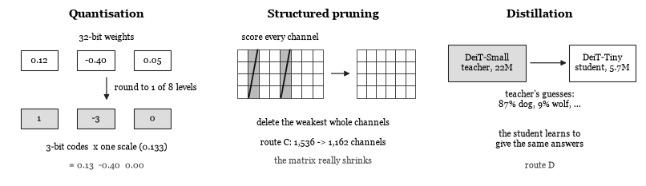
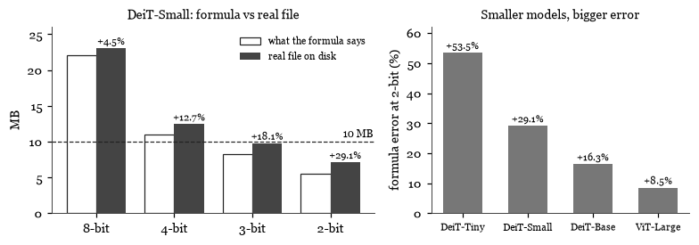
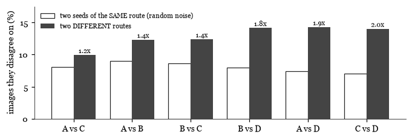
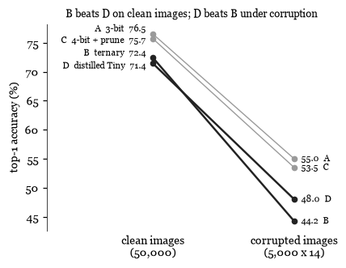

Problem P49 said: take an image-recognition model called a Vision Transformer and make it small enough to fit on a phone, under 10 MB.
We started with a model called DeiT-Small. You show it a photo, and it says which of 1,000 things is in it (a dog, a car, a cup...). It gets the right answer 79.72% of the time on the standard test photos. Inside, the model is just a list of 22 million numbers (called weights) that it learned during training. Each number is stored in 32 bits, so the file is 88 MB. To get under 10 MB, we have to fit each number into about 3.6 bits instead of 32. That is roughly nine times smaller.
Rounding (quantisation). Instead of storing 0.1234567, store a rough version: one of only 8 allowed values (3 bits) or 16 (4 bits). To turn the rough values back into real numbers, the file also keeps a few helper numbers called scales. It is like describing every house on a street as "small, medium or large" plus one note saying how big "large" is on this street.
Cutting (pruning). Some parts of the model barely matter. Delete whole rows of numbers that contribute least, and the model gets smaller.
Copying (distillation). Take a model that is already small (DeiT-Tiny, about a quarter of the size) and train it to give the same answers as the big one, like a student copying a teacher's notes.

Lots of papers compare these methods. They usually compare two things: how accurate the model is on normal, clean photos, and how big the file is, worked out with a formula. We noticed both of these can mislead:
So our question was: if we shrink the same model four different ways, all to the same real file size, with the same amount of training, do the four models make the same mistakes? And does the one that is best on clean photos stay best on damaged photos?
Before building anything, we checked the size formula. We wrote compressed models to disk and measured the real files. At 2 bits, the real DeiT-Small file is 29% bigger than the formula says; for the smaller DeiT-Tiny, 53% bigger. The smaller the model, the worse the formula gets, because the parts that cannot be shrunk are a bigger share of a small model.
This step also told us something practical: a 4-bit DeiT-Small file is really 12.42 MB, which is over the limit. So "just use 4 bits" does not work; a 4-bit route must also cut something.
To be sure our sizes were right, we checked each one a second way: we predicted every file size from the model's shape on paper, and compared it with the measured file. For all 80 files we tested, the only difference was a small label at the start of each file (the header).

A route is one complete recipe for shrinking the model. We built four:
| Route | What it does | File size |
|---|---|---|
| A | Round every number to 3 bits (8 allowed values) | 9.718 MB |
| B | Round every number to just −1, 0 or +1 (called ternary), and squeeze five of them into one byte | 9.785 MB |
| C | Round to 4 bits and cut 374 of the 1,536 rows in each block's middle layer | 9.796 MB |
| D | Train the small DeiT-Tiny to copy DeiT-Small, then round it to 8 bits | 9.765 MB |
To make them the same size, each route has one dial. For route A, the dial is how many numbers share one helper scale. The computer turned the dial, wrote the real file, measured it, and kept adjusting until the file landed just under the target, a bit like tuning a radio. We never looked at accuracy while doing this, only at file size. The four files ended up within 0.8% of each other.
Rounding or cutting a model damages it a little. So after shrinking, each model was retrained briefly, called fine-tuning, so it could adjust. Every route got exactly the same amount: 3,000 training steps with the same settings. That way no model could win just because it was trained longer.
One trick here: the model trains while "seeing" its rounded numbers, but it secretly keeps the precise numbers underneath and keeps improving them. This is called quantisation-aware training. The code that does it is FakeQuant in src/train_routes.py.
We trained each route three times, each with a different random seed. Training involves random choices (like the order the photos are shown in), and the seed fixes those choices. Why three times? See step 5.
We tested every model on the 50,000 standard test photos. Then we made damaged copies of 5,000 of them using a standard set called ImageNet-C: 14 kinds of damage like noise (grainy photos), blur, fog, snow and pixelation. Every model saw exactly the same photos and exactly the same damage. For every model, we saved whether it got each single photo right or wrong.
Here is the subtle part. Even the same route, trained twice with different seeds, gives two slightly different models, and they disagree on some photos. So if two different routes disagree on some photos, maybe that is just luck, not the route.
So we measured luck first. Two runs of the 3-bit route disagree on 8.5% of the photos. We call this the seed floor: the amount of disagreement you get from luck alone. Then we compared different routes: 3-bit and ternary disagree on 12.3%, against a combined seed floor of 9.0%, which is 1.4 times higher. For every pair of routes, the disagreement was 1.2 to 2.0 times the seed floor. So the differences are real, not luck.

Finding 1: same size does not mean same model. The four models, all about 9.8 MB, make different mistakes, beyond what luck explains.
Finding 2: the winner on clean photos loses on damaged photos. On clean photos, the ternary model (B) beats the distilled model (D) by about 1 point. On damaged photos, D beats B by about 3.8 points. This happened in all three training runs. Ternary is hit especially hard by noise.

Why does D cope better? We checked, and it is not because of the copying (distillation). The small DeiT-Tiny, before any compression, already beats ternary on damaged photos by 5.5 points. Copying and rounding actually made it 1.7 points worse. So D is robust because it is a different, smaller network. In plain words: if your camera will see noisy photos, picking a model by its clean-photo score would pick the wrong one.
Finding 3: smaller file does not mean faster. We timed each model on a normal computer processor. The 3-bit and ternary models are nine times smaller but run at the same speed as the original, because computers have no fast way to do maths directly on 3-bit or ternary numbers, so the numbers get expanded back when the model loads. Cutting rows (C) made it about 10% faster. Only the small DeiT-Tiny (D) was much faster: about 2.2 to 2.4 times.
Finding 4: honest confidence. A model also says how sure it is. Model D was the worst at this before a simple one-number correction, and the best after it. Finding 5, whether ternary is specially bad with noise or just a weaker model overall, came out "probably, but not proven": it passed the test we set in advance, but failed a stricter one, so we report it as not proven.
Our final model for P49 is route A: 9.718 MB, 76.50% accuracy, which is 3.22 points below the original's 79.72%.
./reproduce.sh, rebuilds every number from the saved results in about 90 seconds on a laptop.We found and fixed ten bugs. Two examples. A file pattern quietly matched zero training files without any error, so a model would have "trained" on nothing. A copy of the model's numbers was secretly the same object as the original, so a later step overwrote it and cost the ternary route 3.9 points until we caught it. Two of the ten were only noticed because we measured file size alongside accuracy. We also withdrew three claims after checking them properly, for example that published papers get model sizes wrong in general. They don't; the formula is fine for how they store scales, and only breaks under a strict size limit like ours.
The whole project in one breath: we measured real file sizes, built four different 9.8 MB versions of the same model with equal training, measured how much luck alone changes a model, and showed that the four versions fail on different photos, that the best one on clean photos is the worst choice for noisy photos, and that a smaller file is not automatically faster.